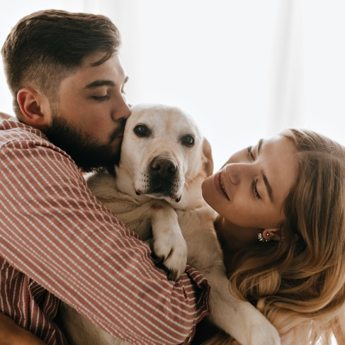

Find Your Hero
All our pet sitters are registered in our database and go through a careful profile and background verification to ensure that they are able to provide a quality and reliable service so that you can have peace of mind while you are away from your loved little one. We make previous inspections in their places to make sure it is safe and has enough space to accommodate animals.

You will also be able to see on the website if the pet sitter has any additional skills as a trainer or veterinarian. My Pets was created exclusively to provide connections between people who need someone to take care of their pets and for people who are available to take care of them in their places, if the pet sitter has some additional training these services can be negotiated outside the platform.
To use My Pets services, make sure that your pet is adequately vaccinated and does not have any health restrictions to be in contact with other animals and other people. It is also important to ensure that he feels comfortable in the environment where he will stay, we recommend that you schedule a visit in advance so that your pet gets to know the new place and gets used to it.